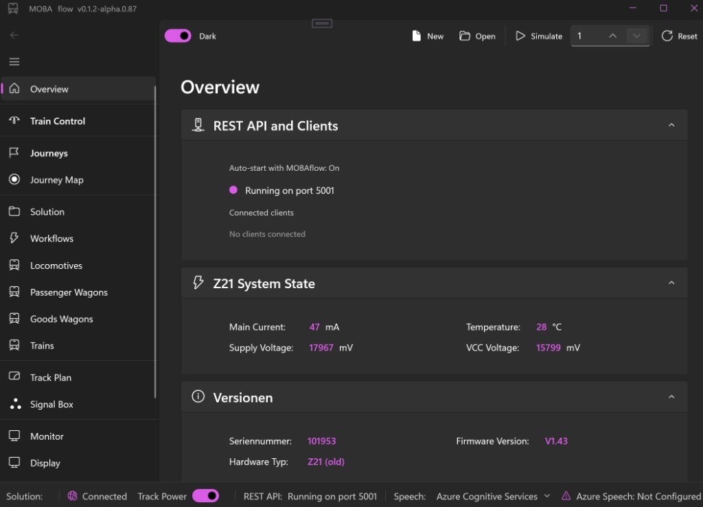

Lokomotiven und Stellwerk
Geschwindigkeit, Richtung und Lokfunktionen über die Z21 steuern. Signale, Weichen und Fahrstraßen im Stellwerk bedienen.
Roco Z21Windows · Android · Roco Z21
Mit MOBAflow steuerst du Lokomotiven, verwaltest Fahrzeuge und planst Fahrten. Rückmelder können vorbereitete Abläufe auslösen, zum Beispiel eine Bahnhofsansage oder einen Signalwechsel.
Entwicklungsstand: 9. Oktober 2026. MOBAflow wird auf die erste stabile Version vorbereitet. Derzeit gibt es Quellcode, aber noch keine fertigen Installationspakete. Als „Preview“ markierte Bereiche sind zum Ausprobieren gedacht und können sich ändern.

Am Rechner und an der Anlage
Die Windows-Anwendung bündelt Fahrzeugverwaltung, Fahrten, Gleisplan und Anlagenmeldungen. Mit der Android-App MOBAsmart kannst du auch neben der Anlage fahren. Beide Geräte müssen im selben privaten Netz sein.
Anleitungen lesen →Vorhandene Funktionen
Die Funktionen werden weiter erprobt. Automatische Softwaretests ersetzen keine Prüfung an einer echten Anlage.
Geschwindigkeit, Richtung und Lokfunktionen über die Z21 steuern. Signale, Weichen und Fahrstraßen im Stellwerk bedienen.
Roco Z21Stationen zu Fahrten zusammenstellen. Rückmeldungen zählen und bei einem festgelegten Zählerstand einen Ablauf starten. Abläufe lassen sich ohne Geräteaktionen probeweise prüfen.
Rückmelder und ZählerGleispläne aus AnyRail importieren oder mit Piko-A-Gleisen aufbauen. Verbindungen prüfen, Änderungen rückgängig machen und Pläne als Grafik exportieren.
PlanungAnsagen aus Text erzeugen, mit Piper oder der Windows-Sprachausgabe. Gespeicherte WAV-Dateien können als Geräusche abgespielt werden.
Ton auf dem RechnerLokomotiven, Wagen, Zugverbände, Fotos und Decoderdaten gemeinsam verwalten. Lokpässe lassen sich ausdrucken.
FahrzeugsammlungVerkehrstage, Verspätungen und Konflikthinweise in der Fahrplan-Vorschau erproben. Abfahrten bleiben Entscheidungen des Bedieners.
Vorschau · noch in EntwicklungDie Anwendungen
MOBAflow ist die Windows-Zentrale. MOBAsmart kann direkt mit der Z21 fahren oder sich über MOBApi mit dem PC verbinden. MOBApi verbindet Geräte, steuert aber nicht selbstständig die Anlage. ESP32-Anzeigen werden noch erprobt; sie sind noch nicht vollständig in die Fahrabläufe eingebunden.
Technische ReferenzWindows-Betriebszentrale
Mobiler Fahrregler
Verbindung zwischen PC und Handy
Testbilder und Gerätezustand prüfen
Einblicke
Ein Klick öffnet die Ansichten in voller Größe. Die Bilder zeigen einen früheren Entwicklungsstand.
Hinter dem Projekt
MOBAflow ist ein offenes Modellbahnprojekt. Der Schwerpunkt liegt derzeit darauf, vorhandene Funktionen zu vervollständigen und Fehler zu beheben. Neue Änderungen und noch offene Prüfungen erklären wir auf MOBAnews.
Aktuelle Nachrichten lesen →„Ich entwickle MOBAflow offen und Schritt für Schritt – mit dem Anspruch, technische Tiefe und Freude am Modellbahnbetrieb zusammenzubringen.“
Einsteigen
Es gibt noch kein fertiges Installationspaket. Zum Ausprobieren muss die Anwendung aus dem Quellcode gebaut werden. Dafür brauchst du unter Windows .NET 10 und die in der Anleitung genannten Entwicklungswerkzeuge.
PC, Handy und Z21 gehören in ein vertrauenswürdiges privates Netz. Es gibt keine Anmeldung oder Benutzerverwaltung: Geräte in diesem Netz können Steuerbefehle senden. Nicht ins öffentliche Internet freigeben.
$ git clone https://github.com/ahuelsmann/MOBAflow.git
$ cd MOBAflow
$ dotnet restore MOBAflow/MOBAflow.csproj
$ dotnet build MOBAflow/MOBAflow.csproj